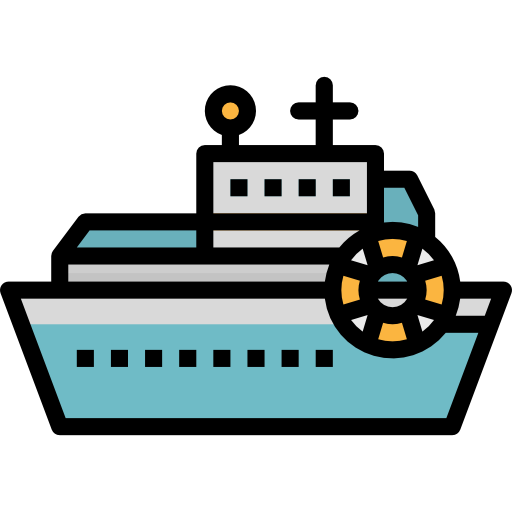

Date of birth:
30.07.1993
Date of birth:
30.07.1993
About me
My name is Szymon and my passion is programming. I have been programming in PHP for 2 years, but also have exposure to other languages such as JavaScript, HTML, CSS. I became interested in programming while studying computer science at Jan Kochanowski University in Kielce. In my everyday work I try to enjoy what I do and expand my qualifications and skills in the field of programming.
Languages
- Polish - Native
- English - communicative
Experience
-
01.02.2020 - currently - Sysconfig
- Programmer (PHP, LUA, Javascript, postgrSQL, HTML and CSS).
- Design and programming of web sites.
- Development of operating systems, database management systems, drivers.
- Finding and fixing bugs that arise while writing code and testing them.
- Assistance in programming service in the field of web technologies.
- Configuration, development and support of VoIP software (including FreeSWITCH and Kamalio).
- Remote configuration of servers and other network equipment (including routers, firewalls and switches) related to the provision of VoIP services.
- Maintenance of servers and other network equipment.
-
01.2019 - 12.2019 - Voivodeship Labour Office in Kielce
- IT support.
- Maintenance and repair of computer equipment.
- Construction of logical and physical networks.
- Installation and updating of systems, installation of consumables for office equipment.
- Data archiving.
-
11.2017 – 05.2018 - EBS sp Z.O.O
- IT support.
- Maintenance and repair of computer equipment.
- Working in AutoCAD.
- Installation and updating of systems, installation of consumables for office equipment.
- Data archiving.
Education
- 2014–2018 - Jan Kochanowski University in Kielce Major: Computer Science - Engineering
- 2009-2013 - Zespół Szkół Nr 2 w Chęcinach IT specialist
Hobbies
-
Graphic Design
Although I don't know much about graphics, I've always enjoyed playing around with Adobe PhotoShop.
-
Board Games
Wieczór z Monopoly lub inną grą planszową z przyjaciółmi lub rodziną to zawsze dobry pomysł na spędzenie wolnego czasu.
-
Gaming
Ever since I can remember, I have enjoyed computer games. After a hard day, it's good to relax in a virtual world.
-
Sport
Gym, swimming, soccer, volleyball are my favorite sports. Sports as a form of relaxation is a great idea.
-
Animals
I have always loved all animals. I am the happy owner of two dogs and a cat.
-

Travel
There is always something worth seeing in the world. Beautiful sights always inspire me. Getting to know new cultures also allows you to get to know yourself better.